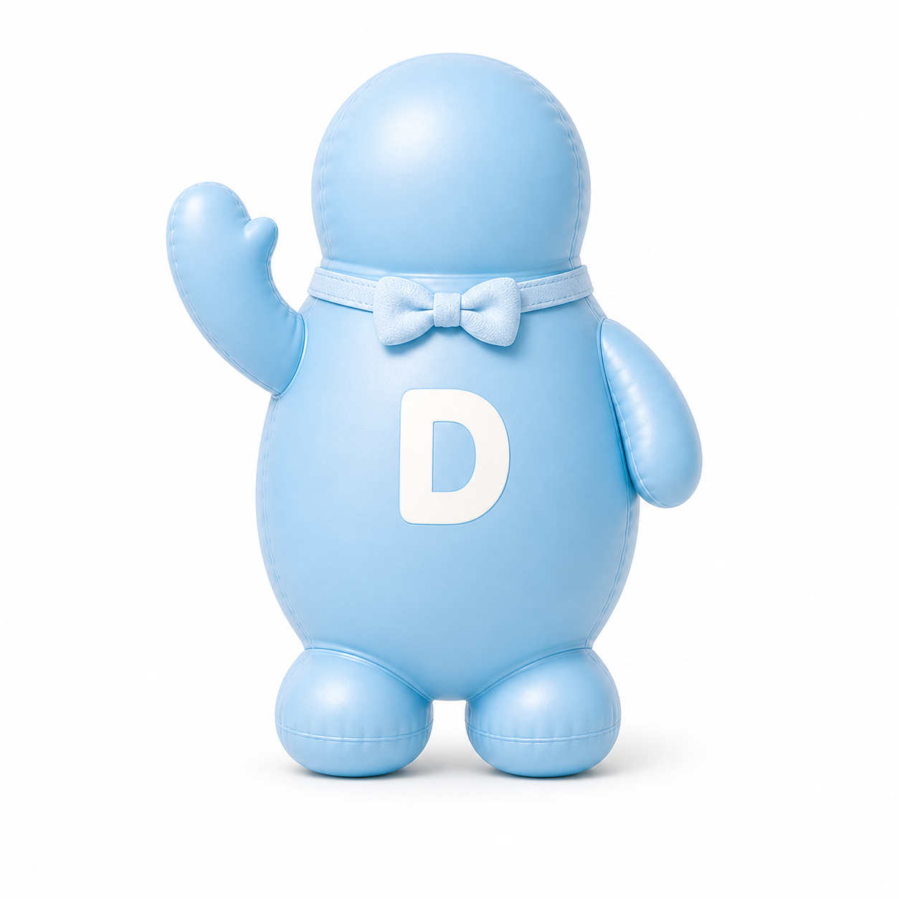
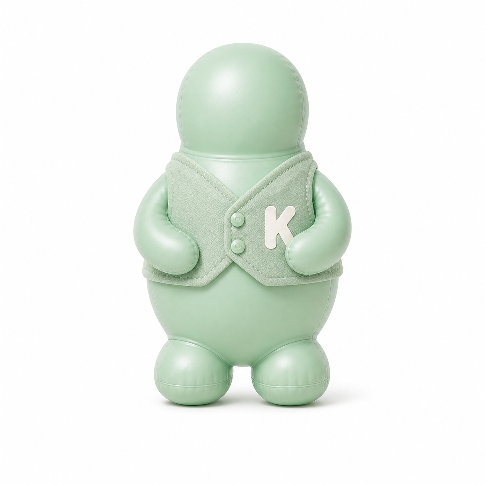
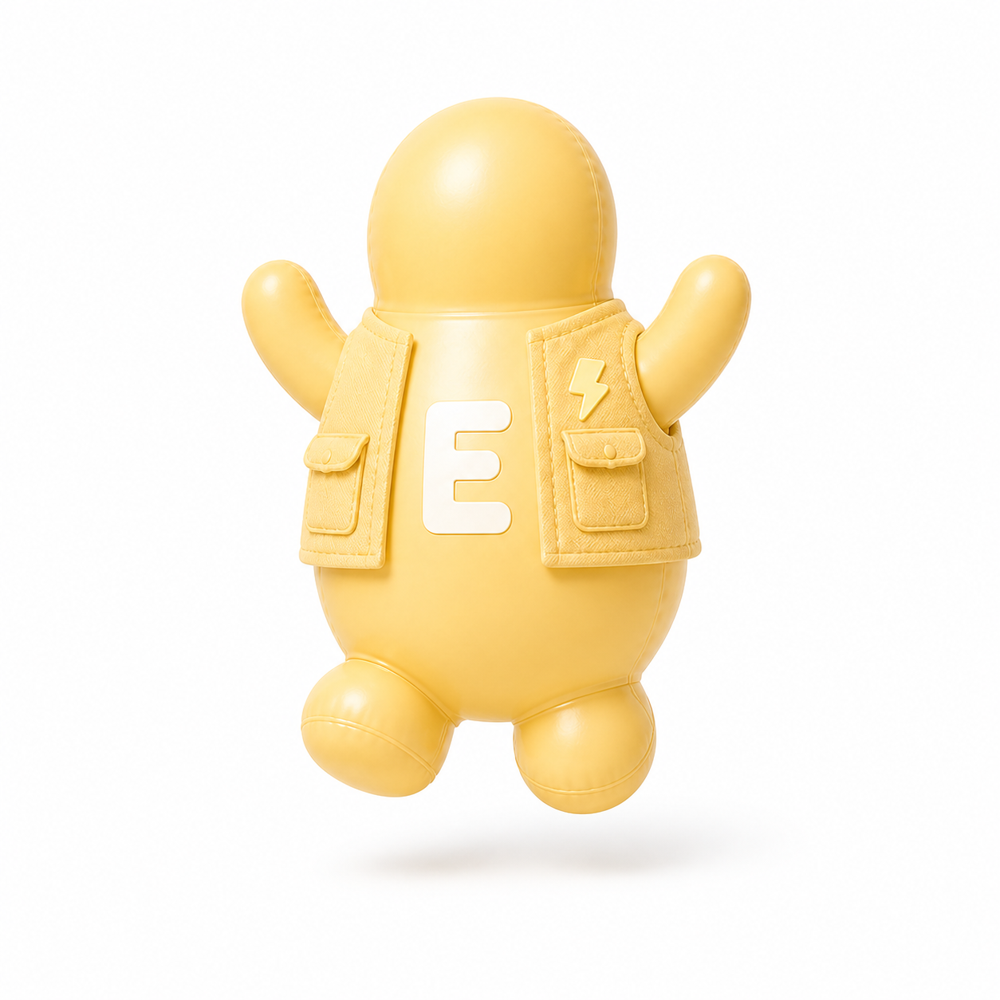
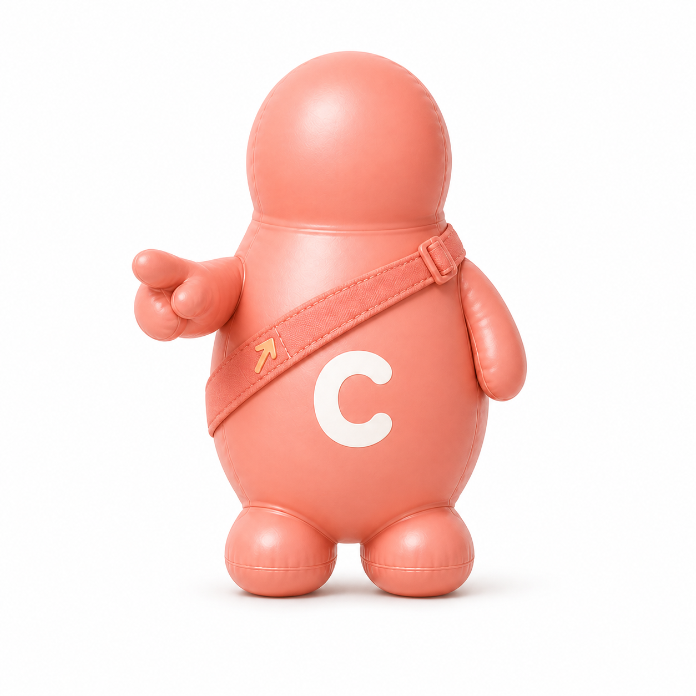

♪ 音效
♫ 音樂
遊戲說明
排行榜
Ⅱ 暫停
↻ 重新開始
分數
0
消除
0
等級
1
模式
挑戰
下一個
剩餘
120
秒




準備好了嗎？
選擇模式，和四寶一起出發！
選擇遊戲模式
∞
挑戰模式
不限時間・挑戰極限
120
限時模式
120 秒・拚最高分
輸入暱稱，登錄本機排行榜
登錄
開始遊戲 →
點按旋轉・長按直落・拖曳移動
返回選擇模式
點按旋轉 · 長按直落 · 拖曳移動
✕